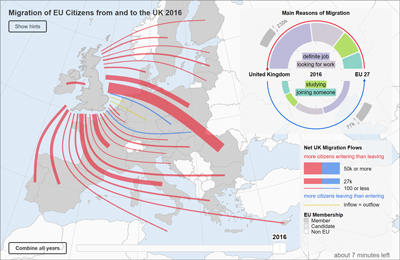
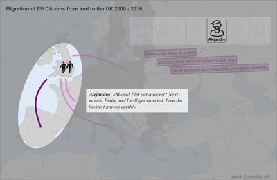
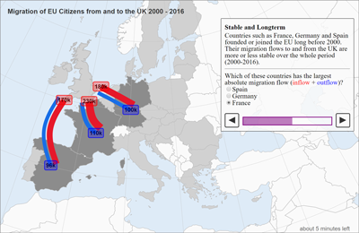

This page provides supplemental material for the research project: "Structure and Empathy in Visual Data Storytelling:
Evaluating their Influence on Attitude"
Experimental Conditions
Click on the images to launch the experimental conditions. Alternatively, download the repository and launch a local server pointing to the conditions folder.
Baseline Condition: Flow Map

Storytelling Condition: Empathy

Storytelling Condition: Structure

Data
Additional Material, Documentation, and Results
- Qualtrics Questionnaire
- Filtering
- Results: Demographics
- Results: Human Values
- Numeric Results: Immigration Attitudes